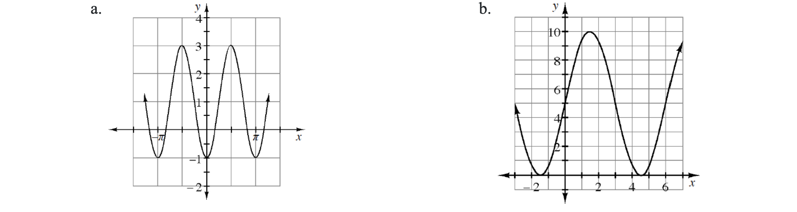
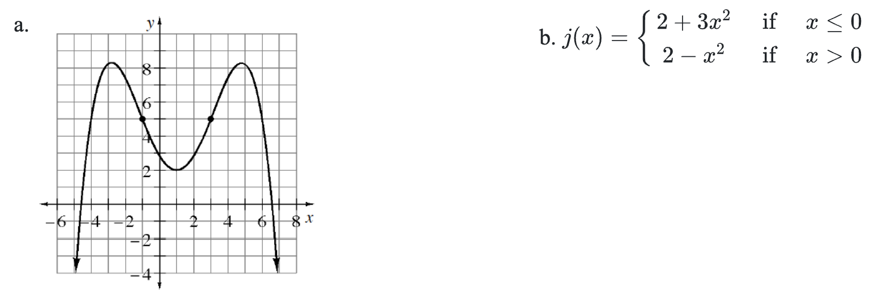
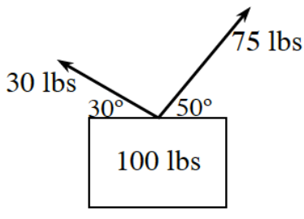

Evaluate each of the following trigonometric expressions.
\(\cos\left(\frac{2\pi}{3}+\frac{3\pi}{4}\right)\)
\(\sin\left(\frac{7\pi}{6}-\frac{\pi}{4}\right)\)
Simplify each the following trigonometric expressions.
\(\cos\left(A\right)\cot\left(A\right)+\sin\left(A\right)\)
\(\sin^2\left(\theta\right)+\tan^2\left(\theta\right)-\cot^2\left(\theta\right)+\cos^2\left(\theta\right)-\sec^2\left(\theta\right)+\csc^2\left(\theta\right)\)
Verify the following trigonometric identity: \(\tan^2\left(\beta\right)+6=\sec^2\left(\beta\right)+5\)
Yuka is trying to solve the following equation for \(\theta\), but is so confused by all the symbols; she does not know what to do.
\(\frac{\sin^3(\theta)-4\sin(\theta)}{\sin^2(\theta)}=3\)
Her friend Carlo suggests that she make the substitution \(u=\sin\left(\theta\right)\). Make this substitution and write the equation in terms of \(u\).
Solve the equation for \(u\).
Write an equation for each graph below.

State the intervals where each of the following functions is increasing, decreasing, concave up, and concave down.

Write the equation of the line connecting the points on the function \(y=\sqrt{x+1}\) at \(x=3\) and \(x=8\).
Two forces are being used to lift a \(100\) pound box as shown in the diagram below. Can they lift the box? Use vector operations to justify your answer.

Angles \(u\) and \(v\) are in the same quadrant. If \(\cos(u)=\frac{8}{17}\) and \(\sin(v)=-\frac{9}{41}\), evaluate:
\(\tan\left(u+v\right)\)
\(\cos\left(v-u\right)\)
Verify the following trigonometric identity: \(\cos\left(y\right)+\sin\left(y\right)\cdot\tan\left(y\right)=\sec\left(y\right)\)
When a person is breathing normally, the amount of air in their lungs can be modeled with a sinusoidal function. When full, Karen’s lungs hold \(2.8\) liters of air. When “empty,” her lungs hold \(0.6\) liters of air. Her brother starts timing her breathing. At \(t=2\) seconds Karen has exhaled completely and at \(t=5\) seconds she has completely inhaled.
Write an equation to model the amount of air in Karen’s lungs at any time \(t\) in seconds, assuming she is breathing normally.
What is the amount of air in Karen’s lungs if she starts holding her breath, \(3.5\) seconds into the timing?
When is the first time Karen has \(2.3\) liters of air in her lungs?
The graph of \(y=-2\left(x+1\right)^3-5\) is to be shifted \(4\) units to the left and \(7\) units down. Write the equation of the new graph.
Given \(f(x)=\frac{x^3-7x-6}{x+1}\).
What is the value of \(f(-1)\)?
Evaluate \(\lim\limits_{x\rightarrow-1}f(x)\). Hint: Use polynomial division.
Use what your answer to part (b) to sketch \(y=f(x)\) without using a calculator.
If \(y=f(x)\) continuous at \(x=-1\)? Use the definition of continuity to justify your answer.
Solve each of the following equations.
\(\log_{5}\left(25\right)+4\log_{2}\left(x\right)=\log_{3}\left(81\right)\)
\(200\left(x-3\right)^{4.2}=5000\)
Write each of the following expressions using sigma notation.
\(\frac{1}{3}+\frac{1}{3.5}+\frac{1}{4}+\frac{1}{4.5}+\ldots+\frac{1}{9.5}\)
\(\sqrt{5}+\sqrt{8}+\sqrt{11}+\sqrt{14}+\ldots+\sqrt{302}\)
\(\cos\left(2\right)+2\cos\left(4\right)+3\cos\left(6\right)+\dots+15\cos\left(30\right)\)
Rewrite the following fraction as a sum of two fractions with linear denominators by using partial fraction decomposition.
\(\frac{5x+6}{x^2+3x}\)